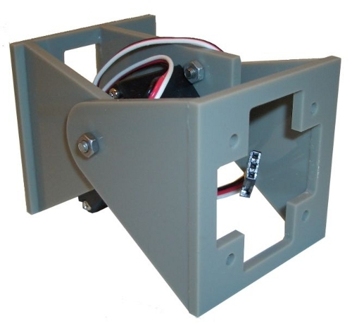

Gracias a Daniel Berdugo tenemos disponible esta plantilla con las piezas para fabricar 20 módulos Y1 (v1.1) en ponoko.com.

Sólo hay que subir la plantilla, seleccionar el material (que tiene que se de 3mm de espesor) y ellos se encargan de realizar el corte por láser y del envío.
El precio es aproximadamente de 74€ (Incluyendo los gastos de envío) por lo que las piezas para cada módulo salen a 3.7€.
Ya nadie tiene excusa para no empezar a construir su robot modular 😀
PD.- Muchísimas gracias a Daniel Berdugo.
Donde y como se manda la plantilla por que he entrado en la web y no me aclaro. hay que descargar algun programa
Hola Miguel Ángel,
En la parte inferior, donde donde pone Make, ve a la opción de “upload a design”. Tendrás que crearte primero una cuenta. Luego subes la plantilla (el fichero .svg) y sigues las instrucciones. Tienes que elegir un material y recuerda que el grosor tiene que ser de 3mm
y La plantilla que sale es para los 20 modulos, o hay que añadir varias, y que tamaño de la plancha hay que cojer, el mas grande?
Hola Miguel Angel,
En la página de los Módulos Y1 hay más información:
Construcción módulos Y1 en ponoko
La plantilla incluye las piezas para los 20 módulos. Ya está preparada para subirla directamente a Ponoko. El tamaño de la plancha es el P3 (780x384mm)
La plantilla la puedes visualizar con el programa libre Inkscape. Lo tienes disponible para todas las distribuciones de Linux y Windows.
ok, muchas gracias obijuan, a ver si puedo pedir 20 modulos.
como guardo el archivo, porque al abrir el enlace me sale como texto. Le cambio la extension a .svg y me aparece en blanco en el inkscape
Perdon, corrijo es que salian las lineas muy claritas y no las veia
El material es plancha P3 acrilic negro, porque me da un importe de 50 dolares, o es porque he elegido mal el material?
Las líneas tienen un grosor de 0.01mm por lo que hay que hacer zoom para verlas.
El precio depende del material empleado. No sé qué material eligió Daniel Berdugo en su cálculo del presupuesto. Me imagino que el más barato que haya. El acrilic negro es más caro, pero tiene muy buena pinta 😉
He mandado mi proyecto a ponoko y me han dicho que el proyecto esta mal y que es de un tamaño mas pequeño que la plantilla P3 de (790 x 384mm). Alguien ha pedido a ponoko los modulos, y de donde. Yo lo he hecho en el reino unido. No se si lo he mandado mal o es que la plantilla no esta bien.